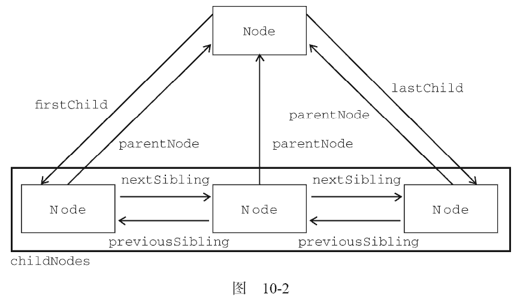

DOM1 级定义了一个Node 接口，该接口将由DOM 中的所有节点类型实现。这个Node 接口在JavaScript 中是作为Node 类型实现的；除了IE 之外，在其他所有浏览器中都可以访问到这个类型。
JavaScript 中的所有节点类型都继承自Node 类型，因此所有节点类型都共享着相同的基本属性和方法。每个节点都有一个nodeType 属性，用于表明节点的类型。节点类型由在Node 类型中定义的下列12 个数值常量来表示，任何节点类型必居其一：
通过比较上面这些常量，可以很容易地确定节点的类型，例如：
if (someNode.nodeType == Node.ELEMENT_NODE){ //在IE 中无效
alert("Node is an element.");
}
这个例子比较了someNode.nodeType 与Node.ELEMENT_NODE 常量。如果二者相等，则意味着someNode 确实是一个元素。然而，由于IE 没有公开Node 类型的构造函数，因此上面的代码在IE 中会导致错误。为了确保跨浏览器兼容，最好还是将nodeType 属性与数字值进行比较，如下所示：
if (someNode.nodeType == 1){ //适用于所有浏览器
alert("Node is an element.");
}
并不是所有节点类型都受到Web 浏览器的支持。开发人员最常用的就是元素和文本节点。本章后面将详细讨论每个节点类型的受支持情况及使用方法。
要了解节点的具体信息，可以使用nodeName 和nodeValue 这两个属性。这两个属性的值完全取决于节点的类型。在使用这两个值以前，最好是像下面这样先检测一下节点的类型。
if (someNode.nodeType == 1){
value = someNode.nodeName; //nodeName 的值是元素的标签名
}
在这个例子中，首先检查节点类型，看它是不是一个元素。如果是，则取得并保存nodeName 的值。对于元素节点，nodeName 中保存的始终都是元素的标签名，而nodeValue 的值则始终为null。
文档中所有的节点之间都存在这样或那样的关系。节点间的各种关系可以用传统的家族关系来描述，相当于把文档树比喻成家谱。在HTML 中，可以将<body>元素看成是<html>元素的子元素；相应地，也就可以将<html>元素看成是<body>元素的父元素。而<head>元素，则可以看成是<body>元素的同胞元素，因为它们都是同一个父元素<html>的直接子元素。
每个节点都有一个childNodes 属性，其中保存着一个NodeList 对象。NodeList 是一种类数组对象，用于保存一组有序的节点，可以通过位置来访问这些节点。请注意，虽然可以通过方括号语法来访问NodeList 的值，而且这个对象也有length 属性，但它并不是Array 的实例。NodeList 对象的独特之处在于，它实际上是基于DOM 结构动态执行查询的结果，因此DOM结构的变化能够自动反映在NodeList 对象中。我们常说，NodeList 是有生命、有呼吸的对象，而不是在我们第一次访问它们的某个瞬间拍摄下来的一张快照。
下面的例子展示了如何访问保存在NodeList 中的节点——可以通过方括号，也可以使用item()方法。
var firstChild = someNode.childNodes[0]; var secondChild = someNode.childNodes.item(1); var count = someNode.childNodes.length;
无论使用方括号还是使用item()方法都没有问题，但使用方括号语法看起来与访问数组相似，因此颇受一些开发人员的青睐。另外，要注意length 属性表示的是访问NodeList 的那一刻，其中包含的节点数量。我们在本书前面介绍过，对arguments 对象使用Array.prototype.slice()方法可以将其转换为数组。而采用同样的方法，也可以将NodeList 对象转换为数组。来看下面的例子：
//在IE8 及之前版本中无效 var arrayOfNodes = Array.prototype.slice.call(someNode.childNodes,0);
除IE8 及更早版本之外，这行代码能在任何浏览器中运行。由于IE8 及更早版本将NodeList实现为一个COM 对象，而我们不能像使用JScript 对象那样使用这种对象，因此上面的代码会导致错误。要想在IE 中将NodeList 转换为数组，必须手动枚举所有成员。下列代码在所有浏览器中都可以运行：
function convertToArray(nodes) {
var array = null;
try {
array = Array.prototype.slice.call(nodes, 0); //针对非IE 浏览器
} catch(ex) {
array = new Array();
for (var i = 0,
len = nodes.length; i < len; i++) {
array.push(nodes[i]);
}
}
return array;
}
这个convertToArray()函数首先尝试了创建数组的最简单方式。如果导致了错误（说明是在IE8 及更早版本中），则通过try-catch 块来捕获错误，然后手动创建数组。这是另一种检测怪癖的形式。
每个节点都有一个parentNode 属性，该属性指向文档树中的父节点。包含在childNodes 列表中的所有节点都具有相同的父节点，因此它们的parentNode 属性都指向同一个节点。此外，包含在childNodes 列表中的每个节点相互之间都是同胞节点。通过使用列表中每个节点的previousSibling和nextSibling 属性，可以访问同一列表中的其他节点。列表中第一个节点的previousSibling 属性值为null，而列表中最后一个节点的nextSibling 属性的值同样也为null，如下面的例子所示：
if (someNode.nextSibling === null) {
alert("Last node in the parent’s childNodes list.");
} else if (someNode.previousSibling === null) {
alert("First node in the parent’s childNodes list.");
}
当然，如果列表中只有一个节点，那么该节点的nextSibling 和previousSibling 都为null。
父节点与其第一个和最后一个子节点之间也存在特殊关系。父节点的firstChild 和lastChild属性分别指向其childNodes 列表中的第一个和最后一个节点。其中，someNode.firstChild 的值始终等于someNode.childNodes[0] ， 而someNode.lastChild 的值始终等于someNode.
childNodes [someNode.childNodes.length-1]。在只有一个子节点的情况下，firstChild 和lastChild 指向同一个节点。如果没有子节点，那么firstChild 和lastChild 的值均为null。明确这些关系能够对我们查找和访问文档结构中的节点提供极大的便利。图10-2 形象地展示了上述关系。
在反映这些关系的所有属性当中，childNodes 属性与其他属性相比更方便一些，因为只须使用简单的关系指针，就可以通过它访问文档树中的任何节点。另外，hasChildNodes()也是一个非常有用的方法，这个方法在节点包含一或多个子节点的情况下返回true；应该说，这是比查询childNodes列表的length 属性更简单的方法。
所有节点都有的最后一个属性是ownerDocument，该属性指向表示整个文档的文档节点。这种关系表示的是任何节点都属于它所在的文档，任何节点都不能同时存在于两个或更多个文档中。通过这个属性，我们可以不必在节点层次中通过层层回溯到达顶端，而是可以直接访问文档节点。虽然所有节点类型都继承自Node，但并不是每种节点都有子节点。本章后面将会讨论不同节点类型之间的差异。
因为关系指针都是只读的，所以DOM 提供了一些操作节点的方法。其中，最常用的方法是appendChild()，用于向childNodes 列表的末尾添加一个节点。添加节点后，childNodes 的新增节点、父节点及以前的最后一个子节点的关系指针都会相应地得到更新。更新完成后，appendChild()返回新增的节点。来看下面的例子：
var returnedNode = someNode.appendChild(newNode); alert(returnedNode == newNode); //true alert(someNode.lastChild == newNode); //true
如果传入到appendChild()中的节点已经是文档的一部分了，那结果就是将该节点从原来的位置转移到新位置。即使可以将DOM树看成是由一系列指针连接起来的，但任何DOM节点也不能同时出现在文档中的多个位置上。因此，如果在调用appendChild()时传入了父节点的第一个子节点，那么该节点就会成为父节点的最后一个子节点，如下面的例子所示。
//someNode 有多个子节点 var returnedNode = someNode.appendChild(someNode.firstChild); alert(returnedNode == someNode.firstChild); //false alert(returnedNode == someNode.lastChild); //true
如果需要把节点放在childNodes 列表中某个特定的位置上，而不是放在末尾，那么可以使用insertBefore()方法。这个方法接受两个参数：要插入的节点和作为参照的节点。插入节点后，被插入的节点会变成参照节点的前一个同胞节点（previousSibling），同时被方法返回。如果参照节点是null，则insertBefore()与appendChild()执行相同的操作，如下面的例子所示。
//插入后成为最后一个子节点 returnedNode = someNode.insertBefore(newNode, null); alert(newNode == someNode.lastChild); //true //插入后成为第一个子节点 var returnedNode = someNode.insertBefore(newNode, someNode.firstChild); alert(returnedNode == newNode); //true alert(newNode == someNode.firstChild); //true //插入到最后一个子节点前面 returnedNode = someNode.insertBefore(newNode, someNode.lastChild); alert(newNode == someNode.childNodes[someNode.childNodes.length-2]); //true
前面介绍的appendChild()和insertBefore()方法都只插入节点，不会移除节点。而下面要介绍的replaceChild()方法接受的两个参数是：要插入的节点和要替换的节点。要替换的节点将由这个方法返回并从文档树中被移除，同时由要插入的节点占据其位置。来看下面的例子。
//替换第一个子节点 var returnedNode = someNode.replaceChild(newNode, someNode.firstChild); //替换最后一个子节点 returnedNode = someNode.replaceChild(newNode, someNode.lastChild); //在使用replaceChild()插入一个节点时，该节点的所有关系指针都会从被它替换的节点复制过来。尽管从技术上讲，被替换的节点仍然还在文档中，但它在文档中已经没有了自己的位置。 //如果只想移除而非替换节点，可以使用removeChild()方法。这个方法接受一个参数，即要移除的节点。被移除的节点将成为方法的返回值，如下面的例子所示。 //移除第一个子节点 var formerFirstChild = someNode.removeChild(someNode.firstChild); //移除最后一个子节点 var formerLastChild = someNode.removeChild(someNode.lastChild);
与使用replaceChild()方法一样，通过removeChild()移除的节点仍然为文档所有，只不过在文档中已经没有了自己的位置。
前面介绍的四个方法操作的都是某个节点的子节点，也就是说，要使用这几个方法必须先取得父节点（使用parentNode 属性）。另外，并不是所有类型的节点都有子节点，如果在不支持子节点的节点上调用了这些方法，将会导致错误发生。
有两个方法是所有类型的节点都有的。第一个就是cloneNode()，用于创建调用这个方法的节点的一个完全相同的副本。cloneNode()方法接受一个布尔值参数，表示是否执行深复制。在参数为true的情况下，执行深复制，也就是复制节点及其整个子节点树；在参数为false 的情况下，执行浅复制，即只复制节点本身。复制后返回的节点副本属于文档所有，但并没有为它指定父节点。因此，这个节点副本就成为了一个“孤儿”，除非通过appendChild()、insertBefore()或replaceChild()将它添加到文档中。例如，假设有下面的HTML 代码。
<ul>
<li>item 1</li>
<li>item 2</li>
<li>item 3</li>
</ul>
如果我们已经将<ul>元素的引用保存在了变量myList 中，那么通常下列代码就可以看出使用cloneNode()方法的两种模式。
var deepList = myList.cloneNode(true); alert(deepList.childNodes.length); //3（IE < 9）或7（其他浏览器） var shallowList = myList.cloneNode(false); alert(shallowList.childNodes.length); //0
在这个例子中，deepList 中保存着一个对myList 执行深复制得到的副本。因此，deepList 中包含3 个列表项，每个列表项中都包含文本。而变量shallowList 中保存着对myList 执行浅复制得到的副本，因此它不包含子节点。deepList.childNodes.length 中的差异主要是因为IE8 及更早版本与其他浏览器处理空白字符的方式不一样。IE9 之前的版本不会为空白符创建节点。
cloneNode()方法不会复制添加到DOM 节点中的JavaScript 属性，例如事件处理程序等。这个方法只复制特性、（在明确指定的情况下也复制）子节点，其他一切都不会复制。IE 在此存在一个bug，即它会复制事件处理程序，所以我们建议在复制之前最好先移除事件处理程序。
我们要介绍的最后一个方法是normalize()，这个方法唯一的作用就是处理文档树中的文本节点。由于解析器的实现或DOM操作等原因，可能会出现文本节点不包含文本，或者接连出现两个文本节点的情况。当在某个节点上调用这个方法时，就会在该节点的后代节点中查找上述两种情况。如果找到了空文本节点，则删除它；如果找到相邻的文本节点，则将它们合并为一个文本节点。本章后面还将进一步讨论这个方法。